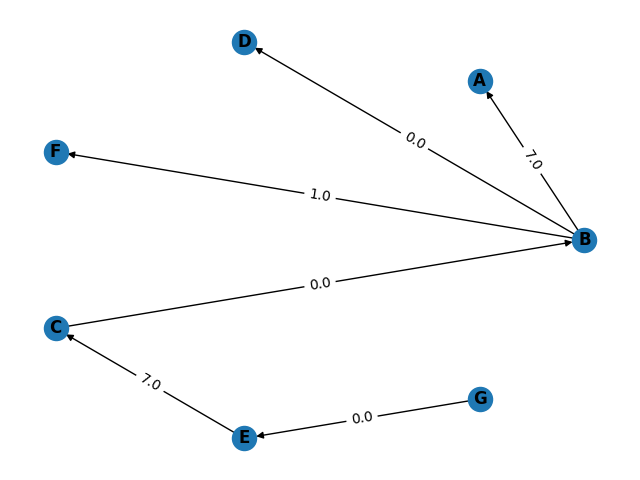

Introduction
Johnson’s algorithm is used to find the shortest paths between all pairs of vertices in a directed graph. We convert negative edge weights into non-negative edge weights. It does this by using the Bellman-Ford algorithm to remove all negative weights. It then allows Dijkstra’s algorithm to be used on the new graph reweighted graph. Dijkstra’s algorithm is applied to new graph by taking each node as the source vertex.
What is all-pairs shortest path problem ?
The all-pairs shortest path problem is used to determine the shortest graph distances between every pair of vertices in a given graph. It aims to figure out the shortest path from each vertex (v) to every other vertex (u) in the graph.
Why is this better ?
- Johnson’s algorithm can be used to find shortest distance between all pair of vertices even if the edge weights are negative.
- Johnson’s algorithm works better than Floyd-Warshall algorithm to find shortest path between all pairs of vertices in cases where the graph is a sparse graph.
Applications
- Johnson’s algorithm can be used in gene networks where we have sparse matrices.
Detailed explanation of Johnson’s Algorithm
Since the example above has negative weights we must first convert it to non-negative weights. This conversion will be done by Bellman-Ford algorithm.
Bellman-Ford Algorithm
Since we have a graph with negative edge weights we cannot use Dijkstra's algorithm just yet. These negative edge weights must be converted to positive edge weights by means of Bellman-Ford algorithm. We will add an imaginary source 'S' to all the vertices such that the distance from 'S' to all the vertices individually is 0. We must remember that the output of Bellman-Ford here gives us the factor by which we must increment the weights to make them non-negative in order to make it usable for Dijkstra's algorithm to be applied.
Graph after adding imaginary source vertex 'S'.
The working of Johnson’s algorithm in our implementation can be described as follows:
- We will first create a distance array with size one greater than the number of vertices. We add the extra vertex for the imaginary S vertex. We initialize all the values to infinity except the source vertex which will be initialized to 0.
-
Now we will calculate the shortest distances. We will repeat the following steps for the number of vertices - 1 times.
- First we will iterate over the edges list which contains a list of all valid edges in source, destination and weight of the edge format. If the weight of destination is greater than weight of source plus weight of edge (source, destination) then we will update the distance of the destination to the smaller value.
- After this computation is done we will return the the distance list to with all values except the last value to the Johnson’s algorithm to reweight all the edges. We don't send the last value because it contained the distance of the imaginary 'S' source node which was not actually a part of the graph.
We will now use the list of vertex weights (dist[]) to reweight the graph. We will use the following formula:
weight[i, j] new = weight[i, j] old + dist[i] - dist[j]
Where:
weight[i, j] new : It is the new edge weight between vertex i and j. After reweighting the old edge weight.
weight[i, j] old : It is the old edge weight between vertex i and j.
dist[i], dist[j] : The factor of weight computed from Bellman-Ford for vertex i , j which is contained in dist list.
The graph after the weights have been reweighted. The resultant graph has no non-negative weights. Also the imaginary source vertex 'S' has also been removed.
Dijkstra’s Algorithm
Dijkstra's algorithm is used to find the shortest path from a single source to all the other vertices in the graph which are reachable. We have computed the adjacency matrix after reweighting the original graph to give us the non-negative weights.
The working of Dijkstra’s algorithm in our implementation can be described as follows:
- We will first construct a table similar to ones we make in Prim’s algorithm. This table will be a list of lists where the index of the element represents the vertex number of the graph and the list within the list the first index points to the weight computed from the source node and the second index points to the parent element of the current index.
- We will also construct a list Q which will consist of the items which have not yet been visited.
- We will initialize all the distances to infinity and the parent nodes will be initialized to none.
- We will include all the vertices in the unvisited set Q initially.
- We set the distance of the source node to zero since the distance of the node from itself will always be zero.
- We will run a loop till the unvisited set is not empty.
- Within this loop we will extract the vertex which has the smallest distance in the main table provided the vertex is unvisited. Let this vertex be (u).
- The edge extracted will be removed from the unvisited set. Vertex (u) will be removed.
- We will then find the adjacent vertices to the extracted vertex (u) provided those vertices are in the unvisited set Q. Let the set of vertices be (V).
-
Now we will check if the vertices in (V) are follow the following constraint:
- This condition basically implies that if the distance of vertex v in set (V) in the main table is smaller than the distance of the possible parent vertex (u) from source node plus the distance between the current vertex and the vertex which can possibly be the current vertex’s parent then we will update the table to make make the parent node of the current node as (u) and its distance to be the sum of the two distance.
After running this until the unvisited set is empty we get the solution of the Dijkstra's algorithm. The solution will be then later used for visualising. The results are as follows:
Source Node : A
Source Node : B
Source Node : C
Source Node : D
Source Node : E
Source Node : F
Source Node : G
Time Complexity
The main steps in the algorithm are Bellman Ford Algorithm called once and Dijkstra called V times. Where V is the number of vertices/nodes and E is the number of edges in the graph. Time complexity of Bellman Ford is O(VE) and time complexity of Dijkstra is O(VLogV) (Using Fibonacci heap). So overall time complexity is O(V2 log V + VE). The time complexity of Johnson's algorithm becomes same as Floyd Warshell when the graphs is complete (For a complete graph E = O(V2). But for sparse graphs, the algorithm performs much better than Floyd Warshell.
Drawbacks
The algorithm fails to give us proper result in the presence of negative weight cycles.

In this case we have a cycle. However the sum of the edge weights is negative hence there exists a negative weight cycle.
The presence of negative weight cycles wont lead proper results.